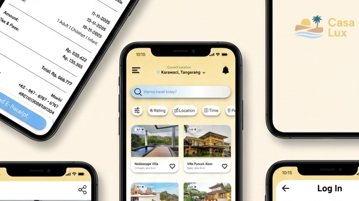
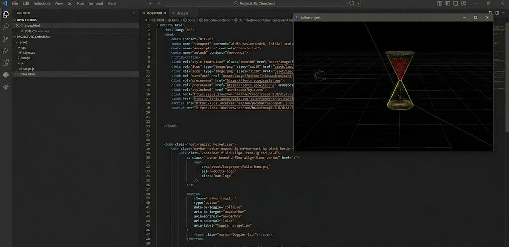

INITIALIZING_SYSTEM...
ZERUI CHEN
Bridging the gap between complex data architecture and human-centric design.
INFORMATION SYSTEMS @ UNIVERSITAS PELITA HARAPAN
Currently a 2nd-semester Information System student at Universitas Pelita Harapan. I am driven by the challenge of breaking down and rebuilding complicated tasks into efficient, scalable digital solutions.
High-fidelity interaction design focusing on modern-day problem solving and user-flow optimization.

Deconstructing and rebuilding university-level web architecture with a focus on visual components and clean CSS.
Building and integrating spatial 3D design into a responsive web system.
